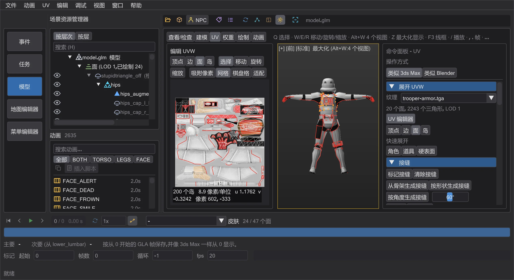
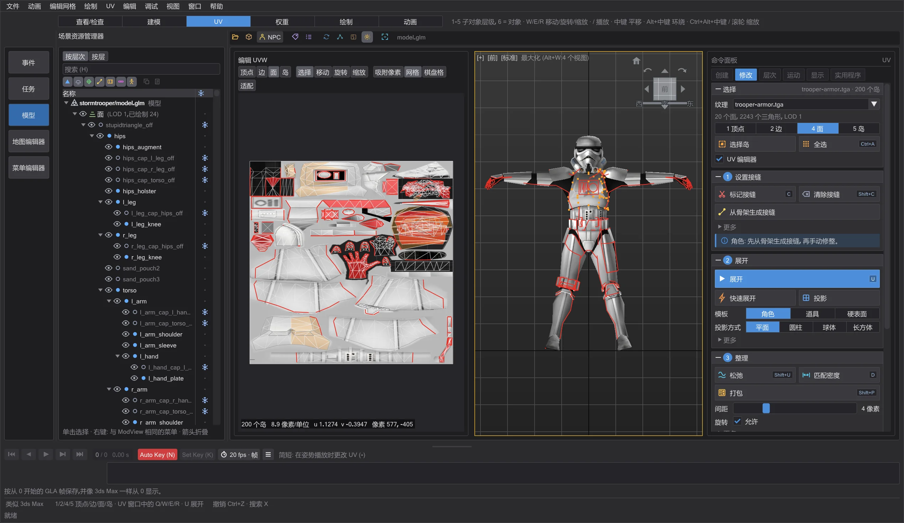
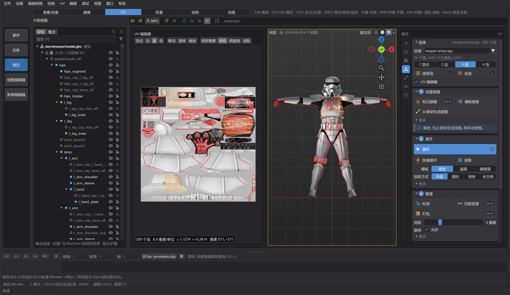
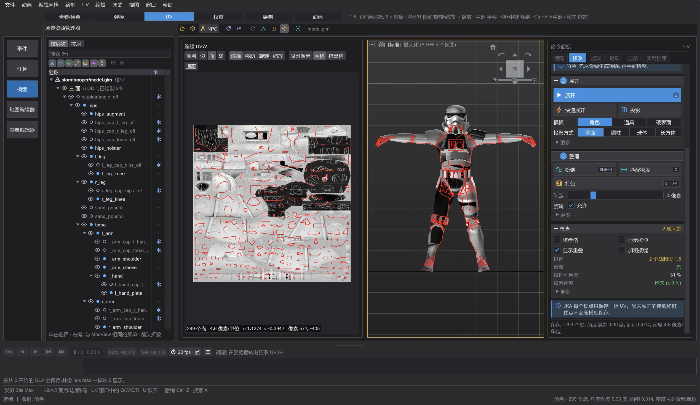

模型选项卡: 创建 UV
把 .glm 或 .md3 的面平铺到其纹理上: 切接缝、展开、拉直、堆叠镜像两半、匹配像素密度并打包岛 - 手动或一步完成 - 然后为游戏保存模型。
UV 区域#
在模型选项卡中打开 .glm 或 .md3, 在顶部选择 UV 区域。编辑 UVW (Blender 模式为 UV 编辑器) 位于视图左侧, 以预览的着色器和皮肤在面的纹理上显示岛; 右侧边缘调整宽度, 滚轮缩放, 中键平移。卷展栏中的 纹理 选择要处理的纹理: 绘制它的所有面一起编辑和打包, 使用视图显示的 LOD; 标签面 (*) 没有 UV。命令位于命令面板的卷展栏、菜单 UV、视图与 UV 编辑器的右键菜单 (UV) 以及搜索 (X, Blender 模式为 F3) 中; 每个提示都写有按键。每个命令都是一个撤销步骤。

右侧面板:选择与三个步骤#
右侧面板按工作顺序排列(3ds Max 模式:命令面板的 修改 选项卡;Blender 模式:属性编辑器的 数据 选项卡)。选择 在标题中给出纹理和岛的数量;其中有纹理的选择(纹理)、带当前操作模式按键的选择层级、选择岛(把选择扩展到整个岛)和 全选。各步骤带编号。1 设置接缝:标记接缝、清除接缝,角色可用 从骨架生成接缝。2 展开:突出显示的主按钮 展开;旁边的 快速展开 执行在 模板 下选择的模板,投影 执行在 投影方式 下选择的投影。3 整理:松弛、匹配密度 和 打包,另有间距滑块和 旋转。每个按钮都显示图标和当前操作模式的按键。不常用的功能折叠在每个步骤的 更多 下:按形状和按角度生成接缝、切开环、镜像接缝;重新求解、钉住、方法和轴;拉直、矩形、堆叠、对齐、锁定以及打包范围。


检查 在标题中一眼显示是否需要处理:一切正常时为绿色,否则显示问题数量。在开关 棋盘格、显示拉伸、显示重叠 和 加粗接缝(在 UV 编辑器中用粗线绘制接缝)下方,数值以表格显示:拉伸(低,或拉伸超过 1.5 的岛的数量)、重叠、纹理利用率(岛覆盖的纹理纹素所占比例)和 纹素密度(均匀,并给出与中位数的最大偏差)。更多 列出岛、镜像堆叠、开口环以及测量值:角度误差、保角性、面积偏差、密度。
两处共用的选择#
顶点、边、面 和 岛 决定单击选择什么 - 同时在 UV 编辑器和模型上, 因此可以在模型上选接缝, 在编辑器中移动它形成的岛。3ds Max 模式: 1、2、4、5 (顶点、边、多边形、元素), Ctrl 添加, Alt 移除; Blender 模式: 1、2、3、4, Shift 切换。拖框可多选。移动、旋转 和 缩放 (W E R; Blender 中为 G R S, 随鼠标移动直到单击) 作用于选择; 吸附像素 按纹理整像素移动。
接缝、展开、排列#
游戏中的模型已有布局: 其接缝作为标记读入并以红色显示。标记接缝 (C) 切开选中的边或选中面的边界, 清除接缝 (Shift+C) 移除接缝并把较小的岛缝到较大的上。从骨架生成接缝、按形状生成接缝 和 按角度生成接缝 自动查找接缝。展开 (U) 把选中的面作为新块展平并按纹理密度放到空位; 重新求解 在原位重新求解岛。方法为 保角 (LSCM) 或 最小拉伸。平面、长方体、圆柱 和 球体 投影选择。之后使用 松弛、拉直、钉住、镜像堆叠 (左右两半共用一块纹理)、匹配密度、定向、锁定 和 打包 (Shift+P: 岛互不重叠, 锁定的保持不动)。JKA 每个顶点只有一组 UV: 接缝分开 UV 的地方, 顶点会被复制, 位置、法线、骨骼和权重相同; 若某命令会使一个面达到 1000 个或更多顶点 (SHADER_MAX_VERTEXES), 则不做更改并给出提示。
在 Blender 模式下 UV 编辑器也接受 Blender 的按键: Ctrl+E 标记接缝, P 固定, Shift+W 打开 对齐 (含 拉直 和 定向), U 打开展开菜单。Blender 中没有按键的命令在菜单和搜索中。
快速展开、检查与保存#
快速展开 一步完成整个流程: 角色 (从骨架生成接缝、打开四肢、堆叠镜像两半)、道具 (按形状生成接缝) 和 硬表面 (在锐边生成接缝、矩形)。无选择时作用于整个纹理。卷展栏 检查 统计重叠、翻转和拉伸的岛、环和密度异常, 并测量布局: 角度误差、保角性、面积误差和每单位像素密度。显示拉伸、显示重叠 和 棋盘格 在编辑器中显示同样内容。纹理是为模型原有布局绘制的 - 移动岛时图像随之移动, 撤销可恢复。用 Ctrl+S 保存: .glm 通过 GLM 写入器, .md3 包含全部帧和标签; 未修改时两者与打开的文件逐字节相同。

来源与许可#
UV 工具源自 WhiteoutLib 和 WhiteoutFlakes (BSD 3-Clause 许可, 附 AI 衍生作品声明, Copyright (c) 2026 Fernando Sahmkow); 按形状生成图表使用 xatlas (MIT, Copyright (c) 2018-2020 Jonathan Young)。它们只处理 Jedi Academy 数据: .glm 和 .md3 的面、.skin 和 .shader。许可文本位于 licenses/, 并列在 THIRD-PARTY.md 和 帮助 > 关于 中。